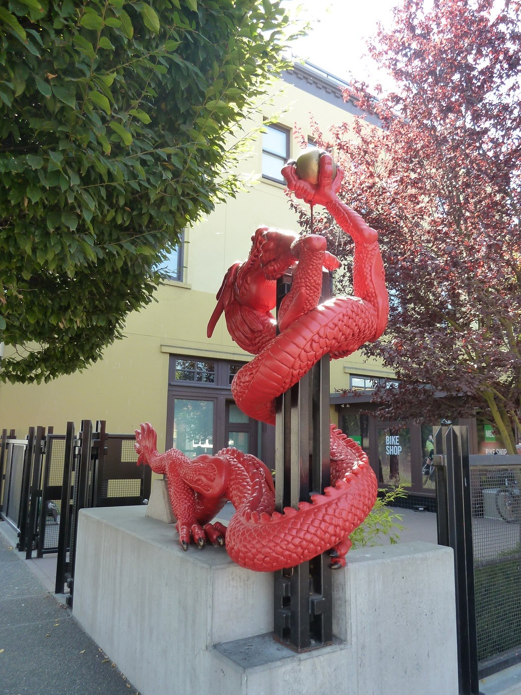
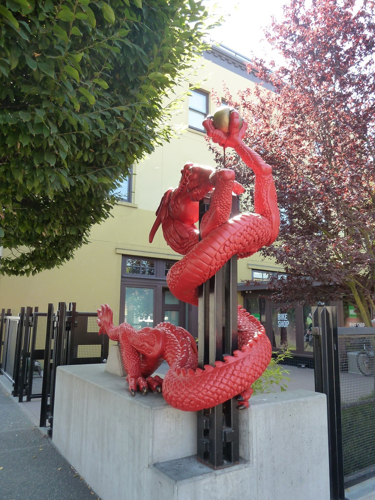

Notre voyage ne commence pas vraiment à Vancouvert. Il commence en réalité en 2016. L'idée à émergée avant la 6ème année de medecine d'Elodie. L'organisation de celui-ci nous aura pris plus d'un an au total! Comme vous devez le savoir, nous sommes assez prévoyants...
La perspective de ce voyage nous a aidé à passer le cap de cette année difficile pour nous deux (surtout pour Elodie). Nous sommes très heureux que vous puissiez suivre avec nous cette aventure !

DépartL'aventure commence !
Un voyage de 30h nous attent pour aller jusqu'à Vancouver. Le décalage horaire là bas et de 9h (de moins qu'en France).


Ca y est! Nous voilà parti pour le Canada! Nous montons dans l'avion surexcités malgrè les 8 heures de vol annoncées. Après de nombreuses turbulences, des bagages qui ont eu du mal à arriver (1h30 !), nous sommes enfin à Toronto.
5 heures plus tard nous y sommes enfin! L'aeroport de Vancouver est splandide et nous récupérons rapidement nos bagages cette fois. C'est avec joie que nous appelons la reception de notre hôtel qui nous envoie une navette. Il doit faire un peu moins de 20° dehors et l'air est l'odeur de l'océan est présente dans l'air. Celle-ci suffit à nous faire oublier notre fatigue le temps d'attendre la navette. Ca y est, nous y sommes, les vacances peuvent enfin commencer.
VancouverJ1 : Centre ville et Stanley Park
Pour cette première journée il fait très beau. Nous commencons par récupérer la voiture, un très gros SUV qui n'était pas notre commande initiale... Mais pas de problème, Adrien se sent déjà nord américain !
Aujourd'hui nous avons visité le quartier de Gastown, Waterfront, Stanley park (en vélo !) ainsi que Chinatown.
Nous commencons par visiter Gastown qui est le plus vieux quartier de la ville. Celui-ci est assez typique avec ses maisons en briques.
Notre visite se poursuit avec Stanley park et son aquarium (qui est absolument magnifique).


Puis nous avons fini la journée par une visite de Chinatown.


Pour le plus grand bonheur d'Adrien, il y a des coffee shop partout et en plus ils sont tres bons! Petit malus, nous avons pris une amende parce que nous nous sommes garé dans le mauvais sens de la route...
J2 : Museum of Anthropology (MOA) et Granville Island
Après une bonne nuit de sommeil, nous sommes bien décidé à attaquer la journée par un vrai petit déjeuner canadien : les Pancakes! Nous n'avons pas été deçu...

Nous avons continué la journée par la visite du MOA qui est centré sur la culture amérindienne et particulièrement celle des alentours de Vancouver et la tribu des Haida.

Direction le quartier de Granville Island ! C'est un ancien chantier/port maritime qui est aujourd'hui le coin des artistes et des hipsters ! Galleries, ateliers d'artistes, brasseurs de bières, petits torréfacteurs. L'attraction de la preque-île est le Public Market, une sorte de grande halle avec de nombreuses étales et des petits restaurant. Très cosmopolite !


La soirée sera calme, repos avant d'attaquer l'île de Vancouver!
VictoriaJ3 : Victoria
Nous quittons la cité de Vancouver pour aller sur l'île du même nom! Nous allons rester 7 jours sur cette île qui fait plus de 450 km de long et à titre de comparaison, est plus grande que la belgique ! Nous esperons bieen voir des ours noirs, des orques, des dauphins et toutes sortes de mammifères et oiseaux ! En route pour Victoria!


Arrivé en début d'après midi, nous avons passé le reste de la journée à Victoria. Ses batiments de style victorien, son ancien village de pecheur flottant et ses boutiques hipster donnent beaucoup de charmes à cette ville.
 



La journée se termine par un bon restaurant et dégustons de délicieux vin du coin (car oui, il y en a!)